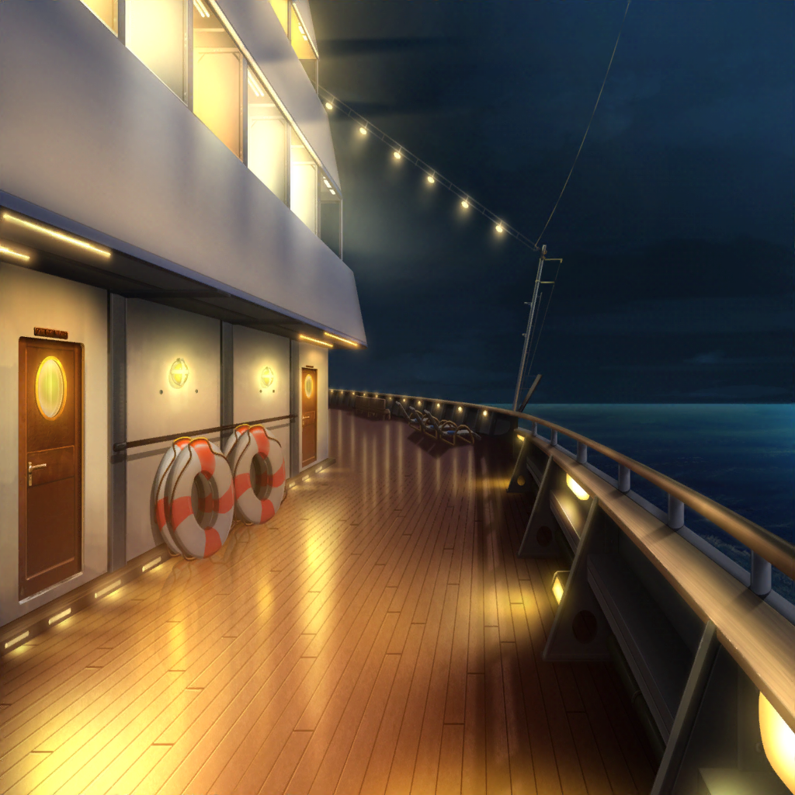
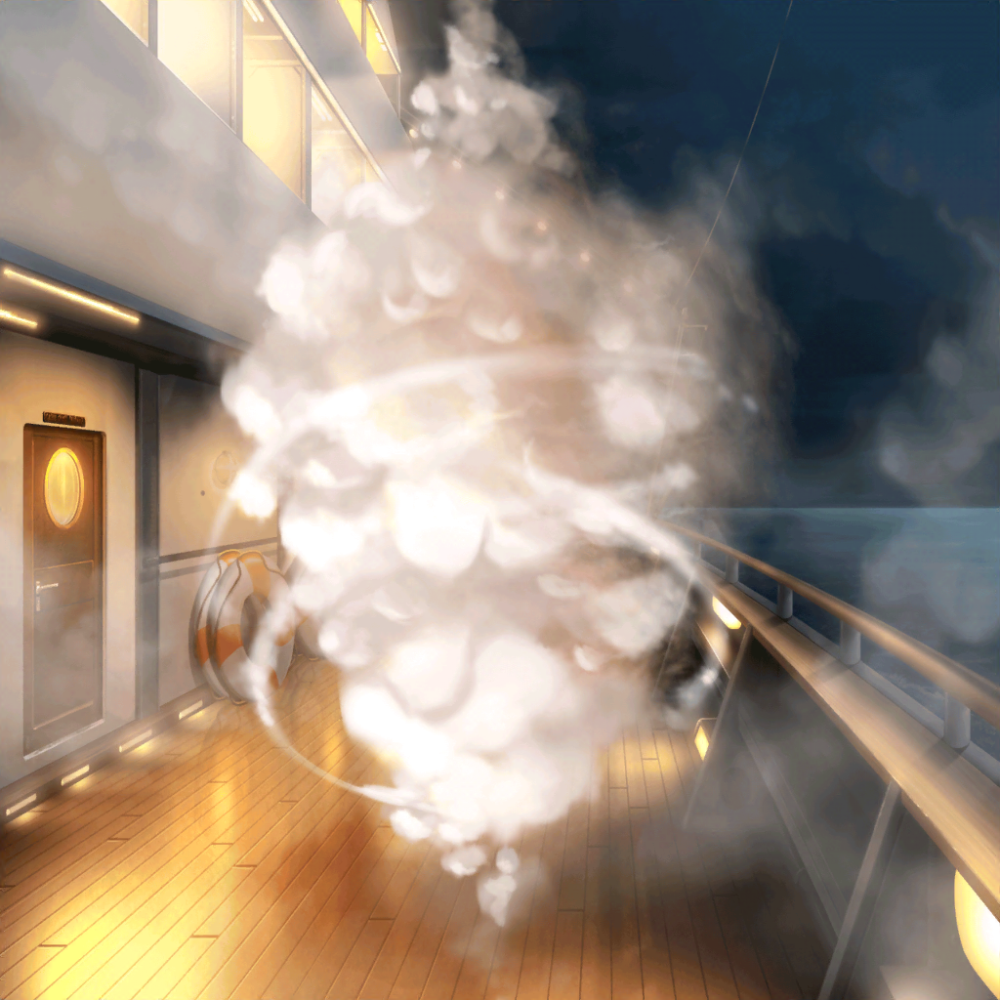

スマイル号 デッキ
はぐみ
デッキに来たけど、怪盗は……
こころ
いたわ！
怪盗ハロハッピー
はっはっはー！
よくぞ追いついたね！
こころ
ここまでよ！
花音を返しなさい！
こころ
花音はあたし達の大切な仲間なんだから！
怪盗ハロハッピー
大切な仲間……なるほど、いい言葉だ
こころ
感心してないで、早く花音を返すのよ！
その手を離しなさい！
はぐみ
かのちゃん先輩を絶対に取り戻すもん！
美咲
ここまで付き合ったんだから、
いい加減にしてほしいんだけど……
花音さんも、色々連れ回されて疲れてるだろうし
花音
こころちゃん、はぐみちゃん、美咲ちゃん……
こころ
それに、もう少しでご飯の時間なのよ。
花音を返してくれなかったら、
みんなお腹ぺこぺこで困っちゃうでしょ！
美咲
そういう問題なの！？
はぐみ
そうだよ！ はぐみ、もうお腹ぐーぐー鳴ってるんだから！
怪盗ハロハッピー
そうだね。長時間付き合わせてしまって申し訳ない
怪盗ハロハッピー
囚われのお姫様は、仲間達の元へ戻りたいかい？
花音
はい……！
戻りたいです！
怪盗ハロハッピー
……そうか、わかったよ、お姫様
怪盗ハロハッピー
では、あと１つだけ付き合ってもらおう。
最後はクイズだ
こころ
わかったわ、なんでも答えるわよ！
はぐみ
はぐみ、がんばって考えるよ！
美咲
また、ギフトショップの時みたいに、
答えようがない質問してくるんじゃないだろうな……
怪盗ハロハッピー
ふふ、簡単なクイズさ。
私がほしかったものは、なんだと思う？
美咲
そんなの知る訳……
こころ
わかったわ！
はぐみ
えっ？ こころん、もう答えがわかったの？
こころ
そう。わかっちゃったの。
あたしはあなたと追いかけっこできて楽しかったわ！
怪盗さん、あなたも楽しかったんでしょ？
怪盗ハロハッピー
さすがは私のソウルメイトだ。鋭いね
こころ
怪盗さん、あなたがほしかったものは、
『みんなと楽しく過ごす時間』よ！
あたしが船に乗ったのも、みんなと楽しいことしたいからだもの！
怪盗ハロハッピー
……正解だ！
怪盗ハロハッピー
とても楽しい時間を過ごすことができたよ、
ありがとう
怪盗ハロハッピー
そのお礼に、このお姫様は返そう
怪盗ハロハッピー
さ、仲間達の元へお戻り。
子猫ちゃんとの逃避行、楽しかったよ
花音
え……？
こころ
ようやく離したわね！
花音、こっちへいらっしゃい！
怪盗ハロハッピー
それでは良い旅を！
またどこかで会えることを楽しみにしているよ

はぐみ
うわ、な、なにこの煙……！
なんにも見えないよ～！
美咲
ここまで凝った演出するとは思わなかった……
２分後
花音
煙、やっと晴れてきたね
こころ
あら……？
怪盗の姿がないわ！？
はぐみ
ええ！？
消えちゃったの！？
こころ
せっかくここまで追い詰めたのに、
怪盗を捕まえることができなかったわ……！
美咲
まあ、いいんじゃないの。
花音さんも無事に戻ってきたんだから
こころ
花音、大丈夫かしら？
ケガはない？
花音
う、うん。
大丈夫だよ
はぐみ
悔しいなぁ、怪盗捕まえたかった！
でも、なんでかのちゃん先輩さらったのか聞きたかったな
美咲
そりゃあ、花音さんが一番無難だからでしょ……
はぐみやこころをさらったら、うるさくてしょうがないし
こころ
さらわれる側も悪くないわね。
今度はあたしをさらってみてくれないかしら
美咲
絶対にない……
美咲
あの、それより船の中に戻らない？
花音さんもゆっくりしたいでしょ
花音
ありがとう、美咲ちゃん
こころ
そうね、とりあえず冷えてきたし、中に戻りましょう
はぐみ
うんうん！
戻ろう！